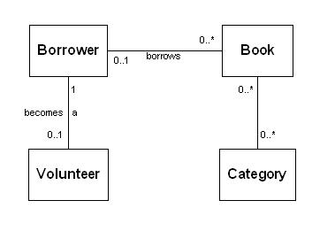
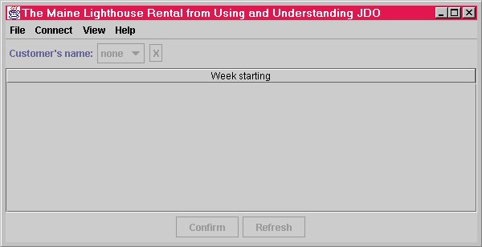

The JDO Learning Tools are designed to work with any JDO implementation. Currently, there are build scripts for four JDO implementations, the JDO reference implementation, SolarMetric's Kodo implementation, Libelis's Lido implementation, and SignSoft's IntelliBO implementation.
The JDO Learning Tools 1.0 are distributed as source only. Following the instructions in this document, you must set up a build environment to build the tools.
This documentation applies to the v1-0-beta-2 version of JDO Learning Tools.
You can download the JDO Learning Tools from the project page.
1.1 What is JDO?2 Setting up the Build Environment
1.1.1 What is persistence?1.2 What are the JDO Learning Tools?
1.2.1 Getting-started programs1.3 What will you find in this documentation?
1.2.2 Testing and exploration programs
1.2.3 Example applications that use JDO
1.4 Where can you learn more about JDO and the JDO Learning Tools?
1.4.1 Information from Sun Microsystems1.5 Credits
1.4.2 On-line resources
1.4.3 Books
1.6 Copyright and licensing
2.1 Current limitations3 The TestJDOHelper Program
2.2 What you need to get started
2.2.1 Java, Ant, and a JDO implementation2.3 Configuring the build environment
2.2.1.1 Getting the JDK2.2.2 Tomcat
2.2.1.2 Getting Ant
2.2.1.3 Getting a JDO implementation
2.2.3 JBoss
2.3.1 Installing the JDO Learning Tools2.4 Testing the build environment
2.3.2 The property files in the bookants directory
2.3.2.1 The global.properties file2.3.3 Configuring Tomcat
2.3.2.2 The custom.properties file
2.3.2.3 The default.properties file
2.3.2.4 Order of precedence for the property files
2.3.4 Configuring JBoss
2.3.5 Special considerations for the JDO reference implementation
2.3.5.1 Obtaining third party software
2.3.5.2 Initializing JDORI's datastore
2.4.1 Using the -Dschema=generate switch
3.1 The location of the code for the TestJDOHelper program4 The TestFactory Program
4.1 The location of the code for the TestFactory program5 The MegaCups Program
5.1 Expected output from the MegaCups program6 The Library Program
5.2 Initializing the datastore for the JDO reference implementation
5.3 Location of the code for the MegaCups program
6.1 The data object model of the Library program7 The StateTracker Program
6.2 The console user interface of the Library program
6.2.1 Modifying the Library program's configuration6.3 The location of the code for the Library program
7.1 The data object model of the StateTracker program8 The Rental Swing Application
7.2 The purpose of the StateTracker program
7.3 The console user interface of the StateTracker
7.4 The location of the code for the StateTracker program
8.1 Getting started with the Rental Swing application9 The Rental Web Application
8.2 The location of the Rental Swing application code
9.1 The location of the code for the Rental Web application10 The Rental Enterprise Application
9.2 Build order dependency
9.3 Location of b-tree data files with reference implementation
10.1 The location of the code for the Rental enterprise application11 The QuoteServer EJB
10.2 Build order dependency
11.1 The command line interface to the QuoteServer client12 Supported JDO Implementations
11.2 The location of the QuoteServer application's code
11.2.1 The location of the property files for the QuoteServer application
12.1 A note on testing13 Roadmap for future versions of the JDO Learning Tools
14.1 v1-0-beta-1 First release
14.2 v1-0-beta-2 Fixes
The JDO Learning Tools is a suite of Java programs that can be used to test and explore a JDO implementation. The JDO Learning Tools also contain example applications for three application architectures that use JDO:
- Client/server application using Swing.
- Web application using the MVC design pattern.
- Enterprise JavaBeans.
Java Data Objects (JDO) is the specification, adopted by the Java Community Process, that defines a universal and transparent persistence service for Java objects.
Persistence a one-word term to describe the ability of an application or service to shuttle state between Java objects and some type of datastore. The datastore is usually a database. In the case of JDO, the database may be an object oriented database, or a relational database, or any other type of database for which a JDO implementation has been build.
The JDO Learning Tools serve three distinct purposes: getting-started programs, testing and exploration programs, and example applications for three different application architectures.
Two of the tools, TestJDOHelper and TestFactory are simple "Hello, JDO!" examples. By building them, you can verify that you have set up correctly the tools and the JDO implementation.
Three of the tools, MegaCups, Library, and StateTracker are designed to test the JDO implementation. Using them, you can gain insight into how JDO works.
The MegaCups program tests JDO's datastore transactions when the data object is contested. Using the interactive Library program, you can test the JDO Query Language. Using the interactive StateTracker program, you can test the PersistenceManager interface.
None of the testing and exploration programs are good examples of how to build your own application.
The remaining tools, the Rental Swing application, the Rental Web application, and the Rental enterprise application are examples of three application architectures.
- Client/server application Swing and JDO.
- Web application using JDO and the MVC design pattern.
- Web application using EJB and the MVC design pattern.
Additional examples of using JDO within Enterprise JavaBeans are provided by the QuoteServer application. The QuoteServer can be built for five flavors of EJBs:
- Stateless CMT session EJB
- Stateless BMT session EJB
- Stateful CMT session EJB
- Stateful BMT session EJB
- Entity BMP EJB
The purpose of these programs is to model in a simple way a working design that fits the application architecture and uses JDO. You can use them as templates for your own applications. They also provide a starting point for experimenting with application design when using JDO.
This documentation describes how to setup the JDO Learning Tools, how to build the tools and example programs, and how to run them.
There are a variety of resources available that you can use to learn more about JDO.
Sun Microsystems' home page for JDO is http://java.sun.com/products/jdo/. On this page, you will find links to the JDO specification (primarily written for JDO implementers), the JDO reference implementation, which you can use with the JDO Learning Tools, and other information.
There are a variety of places where you can learn more about JDO. JDO Central (http://jdocentral.com/) is supported by many JDO vendors. It is a good source of information and has lively discussion groups.
Robin Roos Yahoo mailing list (http://groups.yahoo.com/group/JavaDataObjects/) is frequented by JDO users and experts.
In addition, the companies that are producing JDO implementations also provide quite a bit of information as well. Check out the implementations that work with the JDO Learning Tools in section 12, "Supported JDO Implementations"
At this writing, there are four books that cover JDO in depth.
- David Ezzio, "Using and Understanding Java Data Objects", Apress
- Robin Roos, "Java Data Objects", Addison-Wesley
- David Jordan and Craig Russell, "Java Data Objects", O'Reilly
- Sameer Tyagi and others, "Core Java Data Objects", Prentice Hall
Any of the books can be purchased at Amazon or your local bookstore.
As one of its many virtues, Using and Understanding Java Data Objects has a four-chapter tutorial on the JDO Learning Tools. The first chapter of the tutorial, which is chapter 8 in the book, is available under the "Sample Chapter" link on the publisher's book page.
This documentation was written by David Ezzio.
The JDO Learning Tools were originally written by David Ezzio. He used them to explore Java Data Objects while writing his book.
The JDO Learning Tools, version 1.0 Copyright (c) 2002, 2003 Yankee Software Additional contributors hold copyright to portions of the software. Use and distribution are subject to the GNU General Public License Version 2. This software comes with ABSOLUTELY NO WARRANTY. For details see LICENSE.TXT.
This section has the instructions to set up your build environment.
As of v1-0-beta-2, the JDO Learning Tools are currently limited to the Microsoft Windows platform. The limitation is a result of a lack of testing for any other platform. No doubt such testing would reveal several deficiencies in the Ant build scripts.
The JDO Learning Tools currently use only standalone Tomcat and JBoss as the servlet and EJB containers respectively. The build scripts or configuration variables needed to use different containers or servlet containers build into JBoss do not currently exist.
The JDO Learning Tools currently support only four of the many JDO implementations. The build scripts to support other implementations currently do not exist.
You can either configure everything for the JDO Learning Tools up front, or you can configure what you need as you go along.
To build and run any of the tools, you need to install JDK 1.3.1 (or JDK 1.4) Ant 1.4.1 (or later 1.x) and a supported JDO implementation.
If all you are going to run are the getting-started programs, the testing and exploration programs, and the Rental Swing application, then the configuration steps in this section and its subsections are all you need.
If you don't already have a suitable JDK installed on your machine, go to the Sun Microsystems Web site (http://java.sun.com/) to download the JDK (also known as the SDK).
Follow the directions with the JDK to set it up on your machine.
Most JDO implementations support JDK 1.4 or are in the process of doing so. As of v1-0-beta-2, the JDO Learning Tools has been used with both JDK 1.3.1 and JDK 1.4.1. However, I believe that JDORI 1.0 is dependent on a pre-1.4.1 JDK. JDORI 1.0.1, which is expected to be released any day now, works with either JDK 1.3.1 or 1.4.1 in my tests.
If you do not already have Ant 1.4.1 or later installed on your machine, go to the Apache Ant Web site (http://ant.apache.org) to download the installation.
Follow the directions with Ant to set it up on your machine.
The JDO Learning Tools has been tested with Ant 1.4.1 and 1.5.3. Any later 1.x version should also work.
See section 12, "Supported JDO Implementations" for information on finding JDO implementations for which the JDO Learning Tools has build scripts.
Follow the directions with the JDO implementation to set it up.
To build the Rental Web and the Rental enterprise example applications, you will need a Tomcat 4.1 or later installation.
Although the JDO Learning Tools should work with any servlet/JSP container, as of v1-0-beta-2, it has build scripts only for stand-alone Tomcat.
The JDO Learning Tools have been tested with Tomcat 4.1.12, but they should work with any 4.x version of Tomcat.
To download the Tomcat installation, go to the Apache Tomcat web site at http://jakarta.apache.org/tomcat/.
Follow the directions that come with the download to install Tomcat.
To build the Rental enterprise and QuoteServer example applications of Enterprise JavaBeans that use JDO, you will need a JBoss 3.0.4 or later installation.
Although the JDO Learning Tools should work with any EJB container, as of v1-0-beta-2, it has build scripts only for JBoss.
To download the JBoss installation, go to the JBoss Web site at http://www.jboss.org/.
Follow the instructions to set up JBoss.
Please note that JBoss is available with a Jetty servlet container and a Tomcat servlet container. As of v1-0-beta-2, the JDO Learning Tools has build scripts only for the stand-alone Tomcat servlet container.
After installing the JDO Learning Tools, you will need to configure the property files, the Tomcat installation, and the JBoss installation.
Unzip the JDO Learning Tools into a directory of your choice. Hereafter, this location is called the tools-home directory. Throughout this documentation, when a directory path related to the tools is mentioned, the implied base directory is the tools-home directory.
There are three property files in the tools-home/bookants that control the Ant builds
- global.properties
- default.properties
- custom.properties
The global.properties file is the place where operating system wide properties are defined. As long as you are using Microsoft Windows, you should not have to change these properties.
The custom.properties file contains the two settings that are required to inform the Ant scripts of the JDO implementation that you are using and the location of its home directory.
The jdo.tool property names the implementation specific build script. It must be one of the four current build scripts:
- jdori
- kodo
- lido
- intellibo
The jdo.tool property can also name a build script of your making.
The jdo.home property names the home directory of the JDO implementation that you have selected.
You can modify the custom.properties file directly, but if you are planning to use the JDO Learning Tools with more than one JDO implementation, you should modify the property file that is specific to the implementation. Currently there are four:
- jdori.properties
- kodo.properties
- lido.properties
- intellibo.properties
To switch from one JDO implementation to the next, you copy the implementation's property file into the custom.properties file.
The default.properties file has several properties that identify the location of the various tools used during build and execution of the JDO Learning Tools:
- java.home : home directory of the JDK
- jdbc.jar : location of the JDBC driver Jar (needed only for implementations that use JDBC)
- j2ee.home : location of J2EE home (needed only for the j2ee.jar, which is assumed to be in the lib subdirectory of the directory named by the j2ee.home property)
- jboss.home : location of JBoss home
- tomcat.home : location of Tomcat home
These settings, once determined, do not need to change when switching JDO implementations.
The properties are read in the order, global.properties, custom.properties, and default.properties.
If a property is set in an earlier file, it cannot be modified in a later file.
If you are not going to build the Rental enterprise application, then you do not have to make any special configurations for Tomcat. Tomcat's default HTTP port is 8080.
If you are going to build the Rental enterprise application, you should edit the server.xml file in the config directory under the tomcat-home directory. Find the place where the "Coyote HTTP/1.1 Connector on port 8080" is configured. Alter the port to another port, say 8000. This change reconfigures Tomcat to listen for HTTP connections on port 8000.
If you are not going to build the Rental enterprise application, then you do not have to make any special configuration for JBoss.
If you are going to build the Rental enterprise application, then follow the directions in the preceding section for configuring Tomcat and make the following changes to configure JBoss. Edit the jboss-service.xml file found in the
server/default/deploy/jbossweb.sar/meta-inf
directory under the jboss-home directory. Within this file, find the place where an AJP13 listener is added on port 8009. Comment out the portion of the XML defined by the Call tag. This prevents both Tomcat and JBoss from attempting to listen on the same port for proxy calls from a Web server.
If you are using the JDO reference implementation (JDORI), there are a couple of configuration steps that are easily overlooked.
As mentioned in the README.html document that comes with the JDO reference implementation (JDORI), the JDORI uses the language translator ANTLR (ANother Tool for Language Recognition). Although the current version of ANTLR is 2.7.2, JDORI needs version 2.7.0. You can download this distribution from http://www.antlr.org. ANTLR is public domain software written by Terence Parr.
If you build the tools in the order presented here, you will need to initialize the b-tree datastore for the MegaCups program. If you build the tools in a different order, you still need a one-time initialization of the b-tree datastore. See section 5.2 for further information.
To test the build environment, first use the following command:
ant -projecthelp
You should see output that looks like the following:
E:\JDOLearningTools\jdo-tools\bookants>ant -projecthelp
Buildfile: build.xml
Default target:
Help The default target for this build script
Main targets:
Help The default target for this build script
clean-out removes all files in output directories
learning-programs Builds all learning-programs
library build Library example
megacups build MegaCups example
rental-gui build RentalGui example
rental-servlet-ejb build rental servlet example that uses rental ejb
rental-servlet-opr build rental servlet example for one pm per request
design
sayings-entity build Entity BMP EJB sayings example
sayings-stateful-bmt build BMT Stateful Session EJB sayings example
sayings-stateful-cmt build CMT Stateful Session EJB sayings example
sayings-stateless-bmt build BMT Stateless Session EJB sayings example
sayings-stateless-cmt build CMT Stateless Session EJB sayings example
statetracker build Statetracker example
testfactory build TestFactory example
testjdohelper build TestJDOHelper example
Subtargets:
are-we-ready
help
set-schema-variable
verify
BUILD SUCCESSFUL
Total time: 1 second
E:\JDOLearningTools\jdo-tools\bookants>
Next build the clean-out target.
ant clean-out
You should see output that looks like the following:
E:\JDOLearningTools\jdo-tools\bookants>ant clean-out
Buildfile: build.xml
are-we-ready:
verify:
clean-out:
[echo] Deleting files that the build generates
BUILD SUCCESSFUL
Total time: 1 second
E:\JDOLearningTools\jdo-tools\bookants>
After successfully configuring the build environment, you are ready to start building and using the JDO Learning Tools.
When using the JDO reference implementation, the database schema is generated automatically.
When using the Kodo implementation, the schema is usually generated automatically. If you run into a case where this does not occur, you can use the -Dschema=generate switch as explained below.
When using the Lido or IntelliBO implementations, you must use the -Dschema=generate switch to get the DDL files (SQL files) needed to create the schema in the database. As long as you do not alter the class name, the class package name, or persistent fields, you do not need to regenerate the DDL files with each build. Consequently, you will use the -Dschema=generate switch only occasionally.
The learning-programs target automatically supplies the switch.
To use the switch add it to your Ant invocation command as shown in the following example:
ant -Dschema=generate <target>
The build target for the TestJDOHelper program is
ant testjdohelper
This target builds the tool and runs it. It also places a runTestJDOHelper.bat file in the tools-home directory. You can use the batch file to run the test again.
The last steps of the Ant output for the testjdohelper target should look something like the following:
testjdohelper:
[echo] creating runTestJDOHelper.bat
[echo] Running TestJDOHelper
[java] The JDO Learning Tools, version 1.0
[java] Copyright (c) 2002, 2003 Yankee Software
[java] Additional contributors hold copyright to portions of the software.
[java] Use and distribution are subject to the GNU General Public License Version 2.
[java] This software comes with ABSOLUTELY NO WARRANTY. For details see LICENSE.TXT
[java] -- listing properties --
[java] javax.jdo.option.RestoreValues=false
[java] javax.jdo.option.ConnectionURL=fostore:FOStoreTestDB
[java] javax.jdo.option.Optimistic=false
[java] javax.jdo.option.ConnectionUserName=JDO
[java] javax.jdo.option.ConnectionPassword=book
[java] javax.jdo.option.NontransactionalWrite=false
[java] javax.jdo.PersistenceManagerFactoryClass=com.sun.jdori.fostore.FOStorePMF
[java] javax.jdo.option.NontransactionalRead=false
[java] javax.jdo.option.IgnoreCache=false
[java] javax.jdo.option.RetainValues=false
[java] javax.jdo.option.Multithreaded=false
[java] Got the PMF okay
[echo] created runTestJDOHelper.bat
BUILD SUCCESSFUL
When you successfully run the TestJDOHelper getting-started program, you have connected to JDO, obtained a PersistenceManagerFactory from JDO, and obtained a PersistenceManager from the factory.
There is one source file TestJDOHelper.java that is found in the com/ysoft/jdo/book/factory directory under the tools-home directory. The property file passed to the program is contained in the vendor specific subdirectory under this path.
The build target for TestFactory is testfactory. This target builds the tool and runs it. It also places a runTestFactory.bat file in the tools-home directory. You can use the batch file to run the test again.
The last steps of the Ant output for the testfactory target should look something like the following:
testfactory:
[echo] creating runTestFactory.bat
[echo] running TestFactory
[java] The JDO Learning Tools, version 1.0
[java] Copyright (c) 2002, 2003 Yankee Software
[java] Additional contributors hold copyright to portions of the software.
[java] Use and distribution are subject to the GNU General Public License Version 2.
[java] This software comes with ABSOLUTELY NO WARRANTY. For details see LICENSE.TXT
[java] Starting TestFactory ...
[java] Using adaptor class: com.ysoft.jdo.book.factory.jdori.JDORIAdaptor
[java] The database (FOStoreTestDB.btd) exists
[java] Using URL: (fostore:FOStoreTestDB)
[java] Loaded factory adaptor: com.ysoft.jdo.book.factory.jdori.JDORIAdaptor
[java]
[java] Supported JDO Options
[java] javax.jdo.option.TransientTransactional
[java] javax.jdo.option.NontransactionalRead
[java] javax.jdo.option.NontransactionalWrite
[java] javax.jdo.option.RetainValues
[java] javax.jdo.option.Optimistic
[java] javax.jdo.option.ApplicationIdentity
[java] javax.jdo.option.DatastoreIdentity
[java] javax.jdo.option.ArrayList
[java] javax.jdo.option.HashMap
[java] javax.jdo.option.Hashtable
[java] javax.jdo.option.LinkedList
[java] javax.jdo.option.TreeMap
[java] javax.jdo.option.TreeSet
[java] javax.jdo.option.Vector
[java] javax.jdo.option.Array
[java] javax.jdo.option.NullCollection
[java] javax.jdo.query.JDOQL
[java] Unsupported JDO Options
[java] javax.jdo.option.RestoreValues
[java] javax.jdo.option.NonDurableIdentity
[java] javax.jdo.option.ChangeApplicationIdentity
[java] javax.jdo.option.List
[java] javax.jdo.option.Map
[java] Non-configurable properties
[java] Key: VendorName, value: Sun Microsystems
[java] Key: VersionNumber, value: 1.0
[java] Initial PMF transaction settings
[java] Optimistic: true
[java] Non-trans read: true
[java] Non-trans write: false
[java] RetainValues: true
[java] RestoreValues: true
[java] Connection information
[java] Connection driver: null
[java] Connection factory: null
[java] Connection factory2: null
[java] Connection URL: fostore:FOStoreTestDB
[java] Connection UserName: JDO
[java] Caching info
[java] Ignore Cache: true
[java] Threading setting for PM's
[java] Multithreading turned on: false
[java] This PMF can be serialized
[java] This PMF implements javax.naming.Referenceable
[java] reference class name: com.sun.jdori.fostore.FOStorePMF
[java] factory class location: null
[java] factory class name: com.sun.jdori.fostore.FOStorePMFFactory
[java] Listing addresses for the reference
[java] StringRefAddr: javax.jdo.option.ConnectionPassword,obbx
[java] StringRefAddr: javax.jdo.PersistenceManagerFactoryClass,com.sun.jdori.fostore.FOStorePMF
[java] StringRefAddr: javax.jdo.option.ConnectionURL,fostore:FOStoreTestDB
[java] StringRefAddr: javax.jdo.option.ConnectionUserName,JDO
[java] Obtained PersistenceManagerFactory
[java] Just got 1 PersistenceManagers!
[java] Closing FOStoreDB
[java] Closing the FOStorePMF
[java] -- All done!
[echo] created runTestFactory.bat
BUILD SUCCESSFUL
When you successfully run the TestFactory program, you have successfully connected to JDO using a constructor to obtain the vendor's class that implements a PersistenceManagerFactory interface. You have obtained a PersistenceManager from the factory, and interrogated its default property settings, as well as tested it for the java.io.Serializable interface and the javax.naming.Referenceable interface.
The code for the TestFactory program is contained in the com/ysoft/jdo/book/factory directory and in its subdirectories. The code uses a factory pattern by loading the appropriate factory class for the JDOFactoryAdaptor interface.
The MegaCups program tests conflicting transactions in JDO. It is primarily useful for seeing the behavior of conflicting datastore transactions.
The build target is megacups. This target builds the testing program and creates the batch file runMegaCups.bat to execute it.
Unlike the TestJDOHelper and TestFactory programs, the megacups target does not execute the MegaCups program. Instead, you will need to change to the tools-home directory and execute the runMegaCups.bat batch file.
For the typical JDO implementation, the datastore transactions create locks in the datastore. As a result, each worker thread waits on the locks that the JDO implementation is creating in the datastore.
By default, each invocation of the MegaCups programs starts up five worker threads. If the JDO implementation targets a multiuser datastore, you can run the MegaCups program multiple times concurrently. In the case of the JDO reference implementation, this is not possible since the b-tree datastore that it targets is not multiuser. However, the reference implementation still allows multiple threads to run safely within one executing MegaCups program.
The output from running the MegaCups program will look something like the following:
Mark added coffee to CoffeeUrn [Kitchen-160] contains 20 cups
Sam drank a cup of coffee from CoffeeUrn [Kitchen-161] contains 19 cups
Julie drank a cup of coffee from CoffeeUrn [Kitchen-162] contains 18 cups
Susan drank a cup of coffee from CoffeeUrn [Kitchen-163] contains 17 cups
Frank drank a cup of coffee from CoffeeUrn [Kitchen-164] contains 16 cups
The number in brackets is the version of the state for the CoffeeUrn in the kitchen. It changes whenever anyone draws a cup of coffee from it.
The default workers, Sam, Julie, Susan, and Frank are very fussy about their coffee. If they find the coffee urn empty too frequently, they complain to the manager. The manager will either ignore the issue or promise to fix it. If he ignores it, the worker quits.
The program runs for approximately one minute.
The MegaCups program is the first tool that uses data objects. The JDO reference implementation requires a one-time initialization of the datastore.
If you see an error along the lines of "Could not login user JDO to database FOStoreTestDB," then the one-time initialization is required.
In the build/com/ysoft/jdo/book/coffee directory, find the file factory.properties. In this file, find the following line, which is commented out:
#com.sun.jdori.option.ConnectionCreate=true
Remove the comment (#) mark, save the file, and execute runMegacups.bat again. After successfully running the MegaCups program, reapply the comment mark to the property file so that the database will not be continually recreated.
The code for the MegaCups program is located in the com/ysoft/jdo/book/coffee directory.
The Library program is an interactive tool for exercising the JDO Query Language. While not overly complex, the tool allows a rich set of queries to be run against it.
The build target for the Library program is library. It creates a runLibrary.bat file.
There are four classes of data objects in the Library program:
- Book
- Borrower
- Volunteer
- Category
The following UML class diagram shows the relationships between the data classes.
The console user interface comes up with a simple command line prompt. The many commands are briefly explained below:
Commands to get started:
- help : List the various user interface commands.
- quit : Exit the program.
- populate database : Add a default set of library objects.
- clear database : Delete all persistent library objects.
- get pm config : See the configuration (to modify, see section 6.2.1).
Commands to control transactions:
- begin : Begin the current transaction.
- commit : Commit the current transaction.
- rollback : Rollback the current transaction.
Commands to execute queries:
- find all : Find all objects of a data class (iterates the Extent).
- define query variable : Define variable to be used in the next query (a one-shot setting).
- define query parameter: Select a parameter to be used in the next query (a one-shot setting).
- find : Define and execute a query.
- find in results : Execute a query on the results of the last query.
- view attributes : View the persistent field names and types for a data class.
- view book : View a book.
- view borrower : View a borrower.
- view volunteer : View a volunteer.
- view category : View a category.
Commands to add and modify the Library's data objects:
- add data object : Add a book, borrower, volunteer, or category.
- delete data object : Delete a book, borrower, volunteer, or category.
- borrow book : Have a borrower borrow a book.
- return book : Have a borrower return a book.
- modify volunteer : Modify the info on a volunteer.
- modify book : Modify the info on a book.
To modify the configuration of the PersistenceManager, edit the factory.properties file in the build/com/ysoft/jdo/book/library directory, then restart the Library program.
The code for the Library program is located in the com/ysoft/jdo/book/library directory and its subdirectories.
The StateTracker program is an interactive tool to exercise the JDO PersistenceManager interface.
The build target for the StateTracker program is statetracker. It creates a runStatetracker.bat file.
The StateTracker program has two classes of data objects: Apple and Worm. Apples and worms are in a n-to-m relationship. An apple can have any number of worms, and a worm can be in (or perhaps eat) any number of apples. Most of the actions of StateTracker occur on apples. Worms are there just to make sure that there is a persistent field in the Apple class that is not in its default fetch group.
The Apple has three groups of fields:
- persistent fields
- transactional fields
- unmanaged fields
Each group of fields has the same set of attributes, where "xxx" is either "persistent", "transactional", or "transient".
- String xxxName;
- int xxxSize;
- Date xxxPicked;
- HashSet xxxWorms;
- Worm xxxHeadWorm;
When adding apples, you set the properties for one set of attributes. As a convenience, the same values are assigned to all three sets of attributes.
The StateTracker program is designed to give you as much information as possible on what JDO is doing to the apples. You can ask for the apple's JDO management state. You can exercise a broad sample of the persistence manager's methods. You can view the apple's state with JDO's transparent persistence either turned on or off. You can alter the various properties of the persistence manager. All of the methods in JDO's InstanceCallbacks interface leave tracks. Likewise, the methods in JTA's Synchronization interface leave tracks.
Commands to get started:
- help : List the various user interface commands.
- quit : Exit the program.
Commands to control transactions:
- begin : Begin the current transaction.
- commit : Commit the current transaction.
- rollback : Rollback the current transaction.
- active : Is the current transaction active?
- toss exception : Throw an exception in the next call to the Synchronization.beforeCompletion method.
Commands to control the persistence manager:
- configuration : Check the current configuration.
- configure : Modify the current configuration.
- close : Close the persistence manager.
- is open : Is the current persistence manager open?
- open : Open a new persistence manager (occurs by default on startup).
Commands to add apples and worms:
- add worm : Add a worm (hint: create worms before apples).
- add apple : Add an apple.
General commands to act on apples:
- select : Select the current apple on which all actions occur.
- view : See the current state of the apple. This command invokes JDO's transparent persistence, if the apple is persistent.
- snoop : See the current state of the apple. This command does not invoke JDO's transparent persistence.
- find all : Find all persistent apples.
- get JDO state : Return the current apple's JDO management state.
- modify apple : Alter the current apple's state.
Commands to invoke persistence manager actions on the current apple:
- make persistent : Invoke the makePersistent method.
- delete persistent : Invoke the deletePersistent method.
- make transactional : Invoke the makeTransactional method.
- make nontransactional : Invoke the makeNontransactional method.
- make transient : Invoke the makeTransient method.
- evict : Invoke the evict method.
- evict all : Invoke the evictAll() method.
- refresh : Invoke the refresh method.
- refresh all : Invoke the refreshAll() method.
- retrieve : Invoke the retrieve method.
- tickle default fetch group: Access a field in the default fetch group.
- dirty : Invoke the makeDirty method in JDOHelper.
Miscellaneous commands:
- delete worm : Delete a worm
The code for the StateTracker program is located in the com/ysoft/jdo/book/statetracker directory and its subdirectories.
The Rental applications are three prototypes of a simple reservation system. The Rental Swing application uses JDO as the local persistence service. It uses Swing as the user interface. It is an example of how to design client/server applications with GUI interfaces.
The build target for the Rental Swing application is rental-gui. It creates both a runRentalGui.bat file and a runRentalConsole.bat file. You'll want to use the runRentalGui.bat file.
By far, this is the prettiest application in the JDO Learning Tools.
In the tools-home directory, execute the runRentalGui.bat batch file. This should bring up a Swing application that looks like the following:
Start by pulling down the Connect menu, and selecting the Connect to datastore menu item. After a few seconds, the connection should be made.
Next, pull down the File menu and select the Populate database menu item. This creates the testing data that you need. This step needs to be done only once, unless you blow away the testing data by using the Clear database command.
Now, pull down the View menu and select the Available menu item. You should now see a six column table with 16 rows.
Without entering a customer's name, all you can do is view the available rental periods. After entering a customer's name, you can make, cancel, or alter the customer's reservations. If you are using the JDO reference implementation, you can run only one instance of the Rental Swing application at a time. If you are using a JDO implementation that targets a multiuser database, such as any of the three commercial implementations that the JDO Learning Tools currently supports, then you can run any number of instances and watch them interact.
In case you are charmed by the lighthouse images, be advised that the featured lighthouses are working lights that are not available for rent. The concept is just a small flight of fancy.
The Rental Swing application's code is located in the following directories:
- The com/ysoft/jdo/book/rental/local directory and its subdirectories.
- The com/ysoft/jdo/book/rental/persistent/local directory.
- The com/ysoft/jdo/book/rental/service directory.
The Rental Web application is functionally the same reservation system as the Rental Swing application, except that it is based on MVC design pattern using a controller servlet and JavaServer Pages.
This application requires that you set up Tomcat as explained in sections 2.2.2, 2.3.2.3, and 2.3.3.
The build target for the Rental Web application is rental-servlet-opr. After building the target, you must start up Tomcat. Then open a browser on the URL http://localhost:8080/rental/controller/. You may have configured port 8000 instead of using the default port of 8080, as described in section 2.3.3.
You can open multiple browsers on the address to see a multiuser configuration. It is necessary to make sure that each browser is recognized by the servlet as a separate session. This can be verified by pointing browsers to the URL http://localhost:8080/rental/SessionLock.jsp.
Even with the JDO reference implementation you can open multiple browsers, because to JDO there is only one client, the controller servlet. This configuration would not scale in a clustered environment.
The Rental Web application's code is located in the following directories:
- The com/ysoft/jdo/book/rental/servlet directory and its subdirectories, except the ejb subdirectory.
- The com/ysoft/jdo/book/rental/persistent/servlet directory
- The com/ysoft/jdo/book/rental/service directory.
In the v1-0-beta-1 version, there was a build order dependency. If you built the rental-servlet-opr or rental-servlet-ejb target after the
rental-gui target, then you needed to build the clean-out target first. The clean-out target removed incompatible versions of the data classes. As of v1-0-beta-2, this build order dependency should now be handled for you.There are different versions of the data classes of the Rental applications which show the need for different levels of "infrastructure" in the data classes when using different architectures. It remains true that the versions of the Rental data classes with more infrastructure are compatible with the Rental applications that require less, but not the other way around. The infrastructure increases as you move from the Rental Swing application to the Rental Web application to the Rental Enterprise application.
The fix ensures that you have a compatible version of the data classes for all Rental build targets, regardless of the order in which you build them. The rental-servlet-opr and the rental-servlet-ejb targets remain essentially alternative builds, since both deploy jar files to Tomcat with the same name, but different contents.
If, in spite of the fix, you run into incompatible data classes, you will have to resort to the previous workaround of cleaning out the data classes before building the target of your choice.
If you are using the JDO reference implementation, you will need to copy the files, FOStoreTestDB.btx and FOStoreTestDB.btd, to Tomcat's bin directory.
The Rental enterprise application is very nearly the same reservation system as the Rental Web application, except that the servlet uses an EJB to access JDO rather than accessing it directly itself.
This application requires that you install and configure Tomcat as explained in sections 2.2.2, 2.3.2.3, and 2.3.3. You must install and configure JBoss as described in sections 2.2.3, 2.3.2.3, and 2.3.4.
The build target for the Rental enterprise application is rental-servlet-ejb. After building the target, you must start up Tomcat, and restart JBoss. After the containers are running, open a browser on the URL http://localhost:8000/rental/controller/.
To the end user, the Rental enterprise application is indistinguishable from the Rental Web application.
The Rental enterprise application's code is located in the following directories:
- The com/ysoft/jdo/book/rental/servlet directory and its subdirectories, except the opr subdirectory.
- The com/ysoft/jdo/book/rental/persistent/servlet directory, except not the Lighthouse.java and the persistent.jdo files.
- The com/ysoft/jdo/book/rental/persistent/ejb directory.
- The com/ysoft/jdo/book/rental/service directory.
As of the v1-0-beta-2 version, there is a build order dependency. If you build the rental-servlet-ejb target after the rental-gui target or the rental-servlet-opr target, then you need to build the clean-out target first. This removes the versions of the data classes that work with the Rental Swing application or Rental Web application but not with the Rental enterprise application.
On the other hand, the versions of the data classes that work with the Rental enterprise application DO WORK with the Rental Swing application and the Rental Web application. For this reason, you can build the targets in the following order (assuming that either they have not been build before, or the clean-out target has been build first.)
- rental-servlet-ejb
- rental-servlet-opr
- rental-gui
The QuoteServer application uses an EJB with console client. The console client uses a command line user interface.
The QuoteServer applications exemplify the use of JDO with various types of EJBs.
Before building the QuoteServer, you must install and configure JBoss as described in sections 2.2.3, 2.3.2.3, and 2.3.4.
There are five build targets for the QuoteServer application.
- sayings-stateless-cmt
- sayings-stateless-bmt
- sayings-stateful-cmt
- sayings-stateful-bmt
- sayings-entity
Each target builds a different type of EJB.
There are no build targets for the QuoteServer when using the JDO reference implementation.
After building the QuoteServer, you must restart JBoss. The QuoteServer application does not use Tomcat.
The same command-line client talks to all versions of the QuoteServer EJB. By executing the command runQuoteServer -help from the tools-home directory, you will see the following help output:
QuoteServerClient connects to the QuoteServer EJB
options: -loop <number> -sleep <number> [-numTx <number>]
or: -quote "quote" -source "source"
where the loop number indicates how many quotes to get,
the sleep number indicates the sleep before getting another quote,
and the numTx indicates the number of transactions.
If you provide a numTx parameter, then the client controls the
managed transaction and gets the loop number of quotes per transaction.
If you supply a quote, it will be added to the datastore
If no command-line parameters are supplied, the default parameters are -loop 1 -sleep 0, which returns one quote.
To begin with the QuoteServer has no quotes to serve. To add a quote, use the -quote and -source parameters, for example:
runQuoteServer -quote "A stitch in time saves nine." -source "Poor Richard's Almanac"
When the EJB container manages transactions, specifying the -numTx parameter tells the client to start a JTA transaction before calling the EJB. Before committing the transaction, the client will call the bean the number of times specified in the -loop parameter.
The QuoteServer application code is located in the subdirectories under the com/ysoft/jdo/book/sayings directory.
To demonstrate the range of possibilities, the different QuoteServer examples obtain a PersistenceManager in different ways. At build time, the connection properties are defined in the following files:
- session stateless CMT -- RAR service XML in the vendor directory under the com/ysoft/jdo/book/sayings/persistent directory.
- session stateful CMT -- Vendor specific property file in the vendor subdirectory under the com/ysoft/jdo/book/sayings/persistent directory.
- session stateless BMT -- Vendor specific property file in the com/ysoft/jdo/book/sayings/service/session/stateless_bmt directory.
- session stateful BMT -- Vendor specific property file in the com/ysoft/jdo/book/sayings/service/session/stateful_bmt directory.
- entity -- RAR service XML in the vendor directory under the com/ysoft/jdo/book/sayings/persistent directory.
As of the v1-0-beta-2 version, the JDO Learning Tools supports four JDO implementations. Further information about these versions can be found at the following URLS.
- JDO Reference Implementation : http://java.sun.com/products/jdo/
- Kodo : http://www.solarmetric.com/
- Lido : http://www.libelis.com/
- IntelliBO : http://www.signsoft.com/
The tools have been tested with the following versions of each JDO implementation.
- JDO Reference Implementation : 1.0 and 1.0.1 beta
- Kodo : 2.4.1 and 2.5.0
- Lido : 1.3.0 and 1.4.3
- IntelliBO : 3.1.0
The reference implementation is a demonstration implementation. It uses a b-tree datastore.
The Kodo, Lido, and IntelliBO implementations all target relational databases and use JDBC to connect to the database. Some of them also target other datastores. At the time of this writing, the vendors of these implementations offer free, time-limited evaluation versions.
There are, however, far more JDO implementations available. You are encouraged to contribute build scripts to work with your favorite JDO implementation.
The best that can be said is that testing is spotty. I have used the tools extensively and that use, as well as the use by others, is at the present time the only testing that I am aware of. If anyone has ideas about how testing can be improved, I would love to hear about it.
For the 1.x versions, the emphasis will be on improving the existing tools. Improvements in any of the following dimensions are welcomed:
- Support for additional JDO implementations (both commercial and open source)
- Support for additional operating systems.
- Support for additional open source servlet and EJB containers.
- Addition of automated testing.
- Fixes for bugs.
- Enhancements that do not disturb documentation.
- Improvements to the documentation.
As these improvements make their way into the tools, additional 1.x versions will be released.
Although the 2.0 release is off in the distance, the emphasis is likely to be on significant improvements to the existing tools and the addition of new ones.
- Fixed "view attributes" command in Library tool
- Added "define parameter" command to Library tool
- Removed "javax.jdo.option.RestoreValues" from list of expected supported options in TestFactory program.
- Fixed the order of build issue for the Rental applications. Building in any order should now not disturb the previously built Rental applications.
- Fixed the Lido TestFactory and TestJDOHelper builds for metadata issues in Lido 1.4.3 B58.
- Updated Kodo property files for Oracle 8.1 issue with joins with Kodo 2.5.0. You have to uncomment the property UseSQL92Joins, when using Oracle 8.1 with this version of Kodo.
- Changes to this documentation